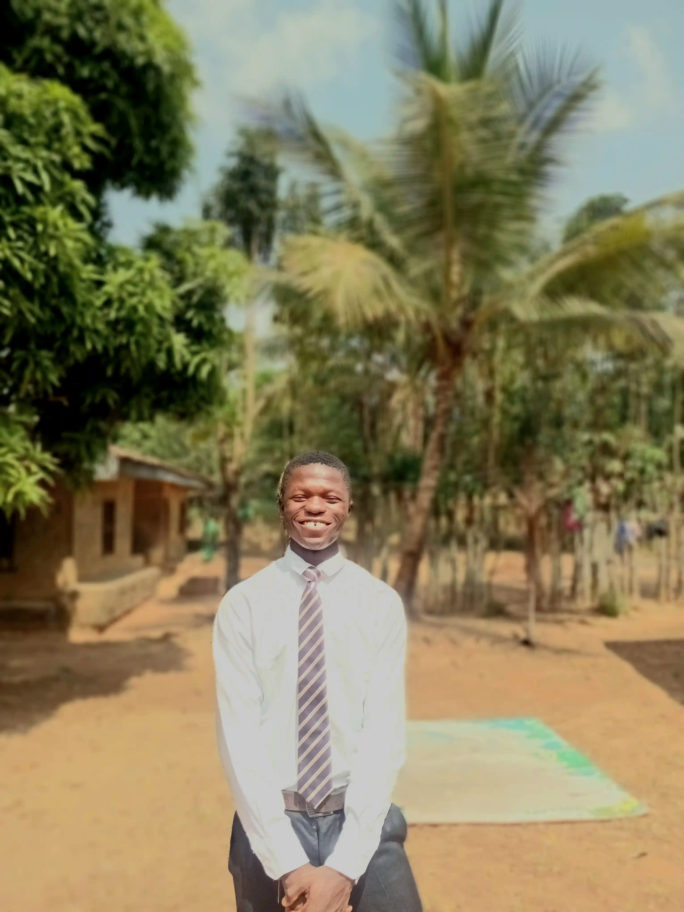

Web Development and Design
Home
I am building a responsive portfolio experience for WDD231 that highlights coursework, projects, and the skills I am developing in web design and programming.
Explore the certificateWhy this course matters
Each module introduces practical web concepts that help me turn ideas into accessible, fast, and polished user experiences.
About Me
My name is Odono John Jachukwu, I'm from Ebonyi state, Nigeria. I am a student in the Web and Computer Programming certificate path, and this page serves as a central place to showcase my learning journey and the projects created throughout the course.

- Responsive layouts that adapt from mobile to desktop
- Accessible markup and thoughtful visual hierarchy
- Clear communication through polished content and structure
Web & Computer Programming Certificate
These courses form the foundation of my current studies and are organized to highlight the work I have completed and the work still ahead.
Student Information
I am continuing my studies through BYU-Pathway and developing strong fundamentals in HTML, CSS, JavaScript, and accessibility.
These projects are designed to demonstrate growth, problem-solving, and attention to detail across every assignment.